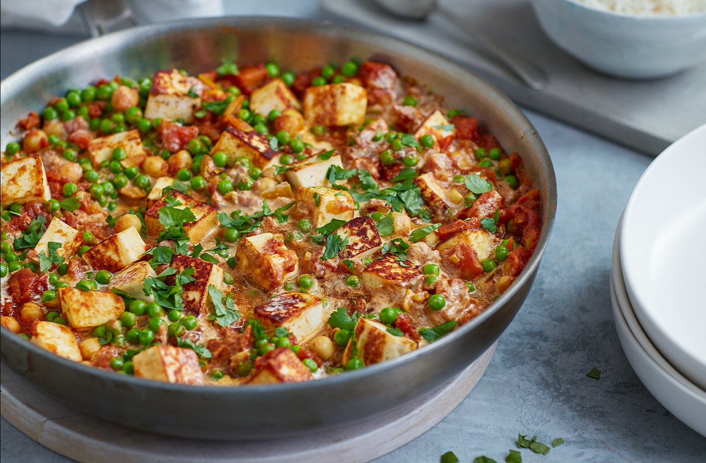

RECIPE FOR PEA AND PANEER CURRY

Frozen peas add a spot of colour and sweetness to this simple veggie curry. Whip it
up in a flash and serve with rice and chutney.
Ingredients:
- 2 tbsp vegetable oil
- 200g paneer, cut into 1.5-2cm cubes
- 1 onion, finely chopped
- 2 garlic cloves, sliced
- 3cm piece ginger, grated
- 2 tsp garam masala
- 1 tsp ground cumin
- 1 tsp ground turmeric
- 2 x 400g tins chopped tomatoes
- 400g tin chickpeas, drained and rinsed
- 150ml single cream
- 200g Grower’s Harvest frozen garden peas
- 2 tbsp roughly chopped fresh coriander
- cooked rice, to serve (optional)
- mango chutney, to serve (optional)
Recipe Instructions
- Heat 1 tbsp oil in a large, deep frying pan over a high heat. Add the paneer and fry for 4-5 mins, flipping
regularly, until lightly golden. Transfer to a plate lined with kitchen paper.
- Add the remaining oil to the frying pan and fry the onion, garlic and ginger for 1 min or until fragrant.
Stir in the spices; cook for 1 min. Add the tomatoes and chickpeas, reduce the heat to low and simmer for
10-15 mins until the sauce has reduced and thickened, stirring occasionally.
- Add the peas, bring to the boil, then stir in the cream and paneer and warm through. Sprinkle with the
coriander and serve with rice and chutney, if you like.